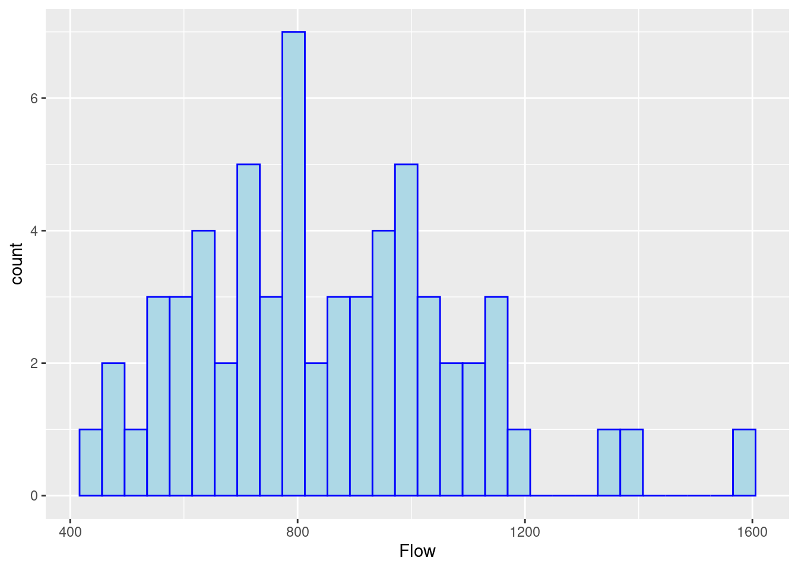
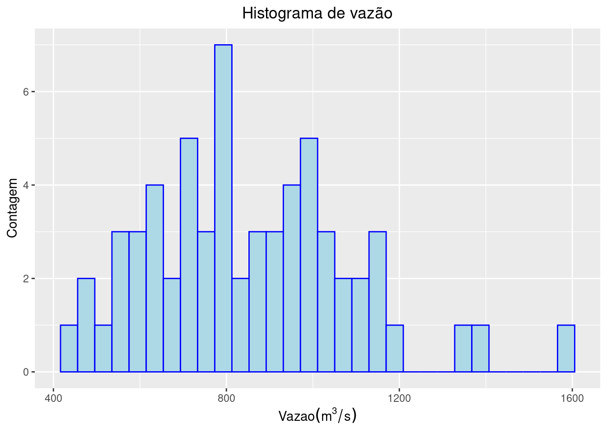
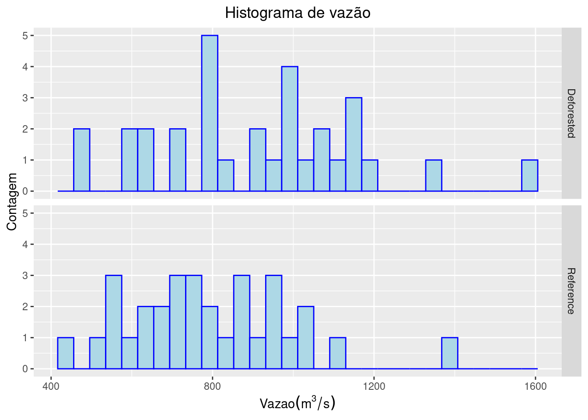
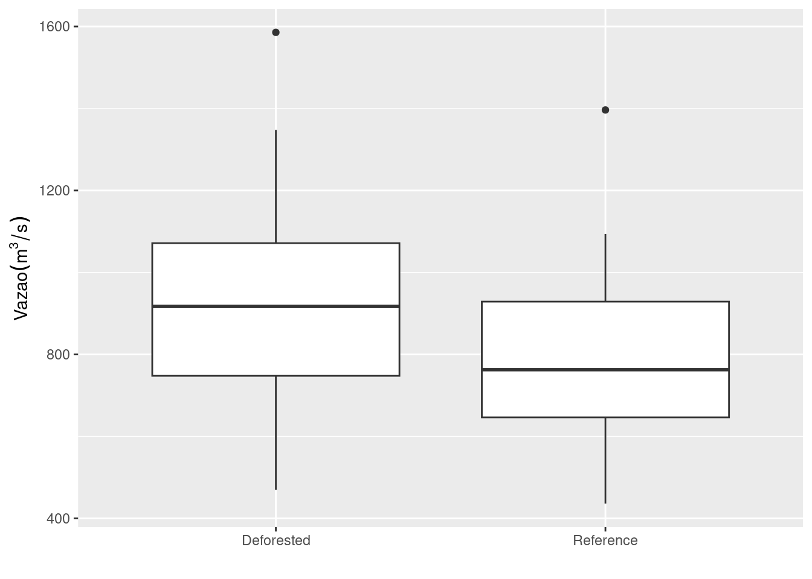
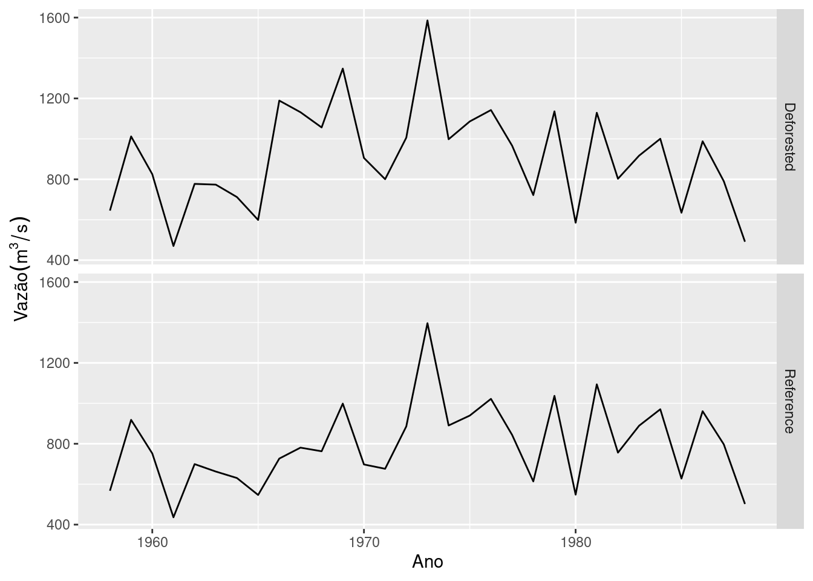
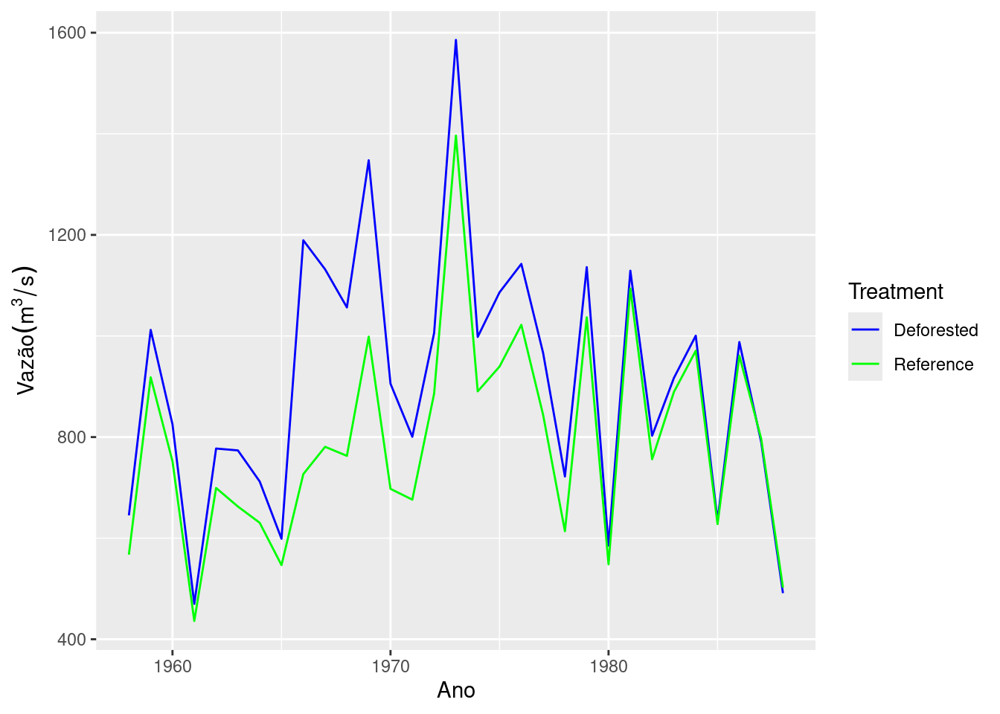
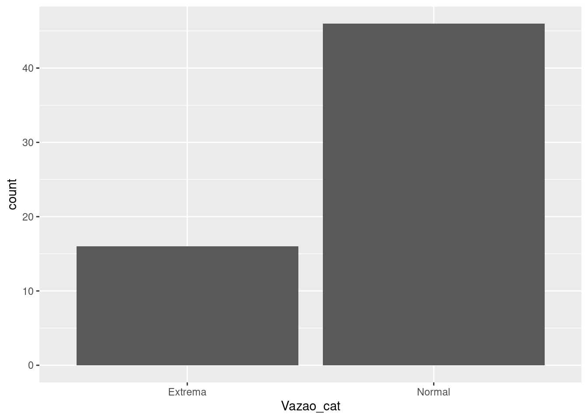
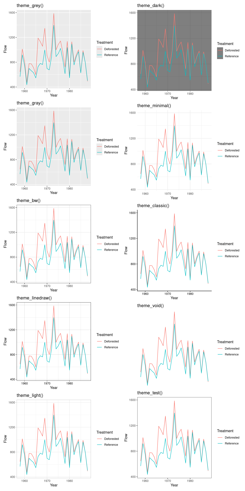

install.packages("ggplot2")
install.packages("patchwork")Gráficos em camadas
Ciência de dados
R
Tidyverse
Visualização gráfica
Criação de gráficos em camadas com
ggplot2, incluindo histogramas, boxplots e gráficos de dispersão.
O pacote ggplot2 no R é baseado na gramática de gráficos (Grammar of Graphics), que permite a construção de visualizações de dados de maneira declarativa. Com ele, é possível criar uma ampla variedade de gráficos, desde simples gráficos de barras e dispersão até complexas visualizações com múltiplas camadas e facetas. O ggplot2 facilita a personalização detalhada dos gráficos, incluindo temas, cores e anotações, tornando-o uma escolha popular entre estatísticos, cientistas de dados e analistas para comunicar informações de maneira clara e eficiente.
O ggplot2 gera gráficos a partir das colunas de um data frame, o que significa que o domínio de ferramentas de transformação de data frames é fundamental para a criação de visualizações eficazes. Cada elemento do gráfico, como eixos, pontos, linhas e barras, é mapeado a partir das variáveis presentes no data frame. Isso permite grande flexibilidade na representação gráfica.
A estrutura em camadas do ggplot2 fornece uma base coesa e flexível para a codificação de gráficos. Por exemplo, é possível começar com uma camada base que define o sistema de coordenadas e os eixos, adicionar uma camada de pontos para criar um gráfico de dispersão, e então sobrepor camadas adicionais para ajustar a estética, adicionar linhas de tendência, ou incluir etiquetas. Essa abordagem em camadas facilita a personalização e a atualização dos gráficos, tornando o processo de criação de visualizações complexas mais organizado e intuitivo. Isso não só melhora a clareza e a legibilidade do código, mas também promove uma maior capacidade de experimentação e exploração dos dados, permitindo que analistas e pesquisadores ajustem e aprimorem suas visualizações de forma eficiente.
Aqui faremos uma introdução aos elementos princiais do ggplot2. Para saber mais verifique as referências abaixo:
Instale o pacote gglot2 e carregue-o com os demais pacotes utilizados nessa seção. O pacote será adicionado para compor múltiplos gráficos em uma mesma figura.
library(ggplot2)
library(patchwork)
library(readr)
library(dplyr)
library(tidyr)1 Histogramas
Faça um histograma dos dados de vazão da tabela HubbardBrook.csv (datasets).
hbrook <- read_csv("https://raw.githubusercontent.com/FCopf/datasets/refs/heads/main/HubbardBrook.csv")
hbrook# A tibble: 62 × 4
Year Treatment Flow Precipitation
<dbl> <chr> <dbl> <dbl>
1 1958 Deforested 645. 1168.
2 1959 Deforested 1012. 1483.
3 1960 Deforested 825. 1321.
4 1961 Deforested 470. 980.
5 1962 Deforested 777. 1232.
6 1963 Deforested 774. 1139.
7 1964 Deforested 712. 1175.
8 1965 Deforested 599. 1115.
9 1966 Deforested 1189. 1222.
10 1967 Deforested 1132. 1315.
# ℹ 52 more rowsggplot(data = hbrook, mapping = aes(x = Flow)) +
geom_histogram(color = "blue", fill = "lightblue")
O comando acima contém duas camadas, separadas pelo símbolo +, que indica o fim de uma camada e o início de outra. No ggplot2, cada camada adiciona ou formata um elemento do gráfico. A ordem das camadas geralmente não importa, mas organizá-las bem facilita a leitura do código. No exemplo, temos:
Função
ggplot(): Define a estrutura básica do gráfico. O argumentodata =especifica o data frame que contém os dados. O argumentomapping =define a estética do gráfico definida pela funçãoaes(x = Flow), indicando que o eixo \(x\) representará a variávelFlow.Função
geom_histogram(): Define a geometria do gráfico, aqui um histograma. A cor da borda é definida porcolor = "blue"e o preenchimento porfill = "lightblue".
Formatações adicionais:
ggplot(data = hbrook, mapping = aes(x = Flow)) +
geom_histogram(color = "blue", fill = "lightblue") +
labs(title = "Histograma de vazão",
x = bquote(Vazao (m^3/s)),
y = "Contagem") +
theme(plot.title = element_text(hjust = 0.5))
Um título foi inserido, os nomes para os eixos \(x\) e \(y\) foram definidos e o título foi centralizado por theme(plot.title = element_text(hjust = 0.5)).
O histograma anterior, combina dados de vazão anual na bacia Deforested e Reference, identificadas pela variável Treatment. Para verificar histogramas separados de acordo com os níveis desta variável podemos usar a função facet_grid()
ggplot(data = hbrook, mapping = aes(x = Flow)) +
geom_histogram(color = "blue", fill = "lightblue") +
labs(title = "Histograma de vazão",
x = bquote(Vazao (m^3/s)),
y = "Contagem") +
theme(plot.title = element_text(hjust = 0.5)) +
facet_grid(rows = vars(Treatment))
NotaOutras geometrias gráficas
Além dos histogramas, existem muitas outras geometrias gráficas do tipo geom_NOME(). Algumas das mais utilizadas são: geom_abline(), geom_bar(), geom_boxplot(), geom_line(), geom_point(), geom_smooth(), geom_text(), entre muitas outras.
2 Boxplots
A princípio, a distribuição das vazões não são muito diferentes entre os tratamentos. Um boxplot pode ser utilizado para visualizar estas distribuições.
ggplot(data = hbrook, mapping = aes(y = Flow, x = Treatment)) +
geom_boxplot() +
labs(y = bquote(Vazao (m^3/s)),
x = "")
O boxplot exige que sejam definidas uma variável contínua, neste caso Flow em \(y\) como função de uma variável categórica, neste caso Treatment em \(x\).
3 Gráfico de dispersão
Para verificar a relação entre vazão e precipitação, pode-se plotar um gráfico de dispersão entre Flow e Precipitation.
ggplot(data = hbrook, mapping = aes(y = Flow, x = Precipitation)) +
geom_point(shape = 21) +
labs(y = bquote(Vazão (m^3/s)),
x = bquote(Precipitação (m^3/ano)))
O Treatment pode ser adicinado a esta figura como cores diferentes.
ggplot(data = hbrook,
mapping = aes(y = Flow,
x = Precipitation,
fill = Treatment)) +
geom_point(shape = 21, size = 3) +
labs(y = bquote(Vazão (m^3/s)),
x = bquote(Precipitação (m^3/ano))) +
guides(fill=guide_legend(title="Estado da área")) +
scale_fill_manual(values = c("blue", "green"))
4 Séries temporais
O operador pipe pode ser combinado com a função ggplot() para filtrar as bacia Deforested e representar a vazão em uma série temporal.
hbrook |>
filter(Treatment == "Deforested") |>
ggplot(mapping = aes(y = Flow, x = Year)) +
geom_line() +
labs(y = bquote(Vazão (m^3/s)),
x = "Ano")
Podem ser vistas as séries temporais para os dois tratamentos, representando-os em figuras diferentes.
ggplot(data = hbrook, mapping = aes(y = Flow, x = Year)) +
geom_line() +
labs(y = bquote(Vazão (m^3/s)),
x = "Ano") +
facet_grid(rows = vars(Treatment))
Ou na mesma figura em cores diferentes.
ggplot(data = hbrook,
mapping = aes(y = Flow, x = Year, color = Treatment)) +
geom_line() +
labs(y = bquote(Vazão (m^3/s)),
x = "Ano") +
scale_color_manual(values = c("blue", "green"))
O desmatamento da bacia Deforested ocorreu em \(1965\), e intervenções para impedir o desenvolvimento da vegetação foram realizadas até \(1970\). Esse intervalo pode ser representado por um retângulo no gráfico.
ggplot(data = hbrook,
mapping = aes(y = Flow, x = Year, color = Treatment)) +
geom_line() +
labs(y = bquote(Vazão (m^3/s)),
x = "Ano") +
scale_color_manual(values = c("blue", "green")) +
scale_x_continuous(breaks = seq(1955, 1990, by = 5)) +
annotate("rect",
xmin = 1965, xmax = 1970,
ymin = -Inf, ymax = Inf,
alpha = 0.2, fill = "red") +
theme_test()
Como as vazões foram mensuradas nos mesmos anos, é possível calcular a diferença de vazão entre os tratamentos e representar essas diferenças graficamente.
hbrook_largo <- hbrook |>
select(-Precipitation) |>
pivot_wider(names_from = Treatment, values_from = Flow) |>
mutate(diffDR = Deforested - Reference)
hbrook_largo# A tibble: 31 × 4
Year Deforested Reference diffDR
<dbl> <dbl> <dbl> <dbl>
1 1958 645. 567. 77.8
2 1959 1012. 918. 93.8
3 1960 825. 752. 73.2
4 1961 470. 436. 33.8
5 1962 777. 699. 78.0
6 1963 774. 663. 111.
7 1964 712. 630. 81.7
8 1965 599. 547. 52.2
9 1966 1189. 727. 463.
10 1967 1132. 781. 351.
# ℹ 21 more rowsggplot(data = hbrook_largo,
mapping = aes(y = diffDR, x = Year)) +
geom_line() +
geom_point(shape = 19) +
labs(y = bquote(Diferença~de~Vazão (m^3/s)),
x = "Ano") +
scale_x_continuous(breaks = seq(1955, 1990, by = 5)) +
annotate("rect",
xmin = 1965, xmax = 1970,
ymin = -Inf, ymax = Inf,
alpha = 0.2, fill = "red") +
theme_test()
5 Gráfico de barras
Será criada uma variável categórica Vazao_cat contendo os níveis Extrema (se Flow >= 1000 m^3/s) e Normal caso contrário. Em seguida, será contado o número de observações com vazão extrema.
extremo <- 1000
hbrook2 <- hbrook |>
mutate(Vazao_cat = if_else(Flow >= extremo,
true = "Extrema",
false = "Normal"))
ggplot(data = hbrook2, mapping = aes(x = Vazao_cat)) +
geom_bar()
Se a variável estiver no eixo \(y\), aes(y = Vazao_cat), o gráfico será desenhado na horizontal.
ggplot(data = hbrook2, mapping = aes(y = Vazao_cat)) +
geom_bar()
6 Temas no ggplot2
O ggplot2 oferece uma série de temas pré-formatados para facilitar a personalização dos gráficos. Para aplicar um tema, basta adicionar uma camada com o nome do tema desejado usando theme_NOME(). Veja um exemplo com o tema theme_classic():
ggplot(hbrook, mapping = aes(x = Year, y = Flow, color = Treatment)) +
geom_line() +
theme_classic()
Os temas básicos disponíveis no ggplot2 incluem:
Código
g1 <- ggplot(hbrook, mapping = aes(x = Year, y = Flow, color = Treatment)) +
geom_line() +
theme_grey() +
labs(title = "theme_grey()")
g2 <- ggplot(hbrook, mapping = aes(x = Year, y = Flow, color = Treatment)) +
geom_line() +
theme_gray() +
labs(title = "theme_gray()")
g3 <- ggplot(hbrook, mapping = aes(x = Year, y = Flow, color = Treatment)) +
geom_line() +
theme_bw() +
labs(title = "theme_bw()")
g4 <- ggplot(hbrook, mapping = aes(x = Year, y = Flow, color = Treatment)) +
geom_line() +
theme_linedraw() +
labs(title = "theme_linedraw()")
g5 <- ggplot(hbrook, mapping = aes(x = Year, y = Flow, color = Treatment)) +
geom_line() +
theme_light() +
labs(title = "theme_light()")
g6 <- ggplot(hbrook, mapping = aes(x = Year, y = Flow, color = Treatment)) +
geom_line() +
theme_dark() +
labs(title = "theme_dark()")
g7 <- ggplot(hbrook, mapping = aes(x = Year, y = Flow, color = Treatment)) +
geom_line() +
theme_minimal() +
labs(title = "theme_minimal()")
g8 <- ggplot(hbrook, mapping = aes(x = Year, y = Flow, color = Treatment)) +
geom_line() +
theme_classic() +
labs(title = "theme_classic()")
g9 <- ggplot(hbrook, mapping = aes(x = Year, y = Flow, color = Treatment)) +
geom_line() +
theme_void() +
labs(title = "theme_void()")
g10 <- ggplot(hbrook, mapping = aes(x = Year, y = Flow, color = Treatment)) +
geom_line() +
theme_test() +
labs(title = "theme_test()")Código
gcol1 <- g1 / g2 / g3 / g4 / g5
gcol2 <- g6 / g7 / g8 / g9 / g10
gcol1 | gcol2
7 Salvando uma figura gerada pelo gglot2.
Para salvar um gráfico gerado com ggplot2, utiliza-se a função ggsave(). Veja o exemplo abaixo:
ggplot(hbrook, mapping = aes(x = Year, y = Flow, color = Treatment)) +
geom_line() +
theme_classic()
ggsave(filename = "Exemplo_ggsave.png",
width = 20, height = 20, units = "cm") Por padrão, a função ggsave() salva o último gráfico criado. Caso seja necessário salvar um gráfico específico, pode-se usar o argumento plot = objeto_grafico.
objeto_grafico <- ggplot(hbrook, mapping = aes(x = Year, y = Flow, color = Treatment)) +
geom_line() +
theme_classic()
ggsave(filename = "objeto_grafico_plt.png",
plot = objeto_grafico,
device = "png",
width = 20,
height = 20,
units = "cm",
dpi = 480)